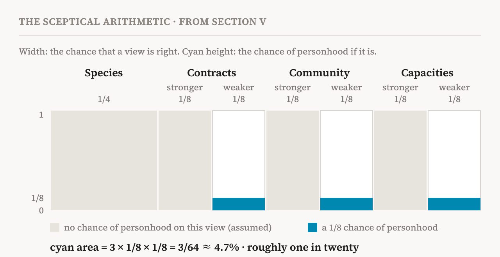
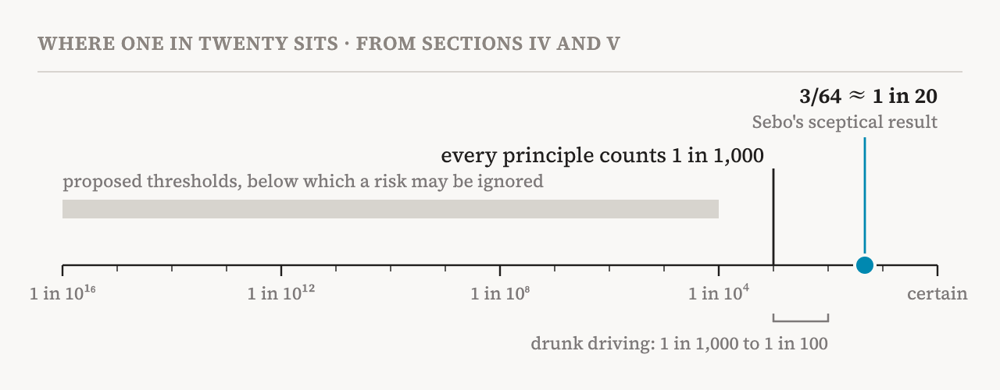

In November 2026, the Golden Gate Institute for AI posted a video on YouTube titled "Jeff Sebo on Should AI Systems Be Legal Persons? | The Curve 2026". It is a ten-minute talk that Jeff Sebo gave at The Curve, the institute's conference on AI. Sebo directs the Center for Mind, Ethics, and Policy at New York University. The question in his title is blunt, and lawmakers, he noted, are already answering it. Several US states have passed laws that rule out personhood for AI in advance. Idaho did so in 2022 and North Dakota in 2023. Utah's law, in force since May 2024, lists 11 categories in which a governmental entity may not grant or recognise legal personhood. Artificial intelligence comes first on the list, which also includes a body of water, the weather and plants. Sebo's advice was to slow down, and not to lock in permanent, all-or-nothing rules in either direction.
The talk is a short version of an argument Sebo made in full a year earlier, in a 39-page article titled "Insects, AI Systems, and the Future of Legal Personhood", published in Animal Law Review in 2025. Its conclusion is bolder. The framework for legal personhood that the law already uses, combined with our ordinary rules for deciding under risk, implies that many insects and some future AI systems should be treated as legal persons, at least minimal ones. Sebo is also a co-author of Taking AI Welfare Seriously, which is in my atlas, and of the paper on how AI systems treat one another, which I read closely in AI to AI.
This piece reads the article closely. It covers what a legal person is, how Sebo reasons under uncertainty, the arithmetic behind his conclusion, the objections he answers, and how the talk later reframed his case. The half of the article about insects follows the same argument, but here I focus on AI.
A person is not a human
The article starts with a distinction that everyday speech blurs. "Human" is a descriptive word: it names the members of one species. "Person" is a legal and normative word. On the definition Sebo takes from the legal theorist Visa Kurki, anyone who holds at least one legal right or duty is a legal person. Corporations are legal persons because the law finds it useful to give them duties and rights, not because they are human.
Four features of this framework matter for what follows. First, a person need not have duties. Following a standard distinction in ethics, Sebo separates legal agents, who can bear duties, from legal patients, who can hold rights. Infants are persons with rights but no duties. Second, rights can differ in content. A mouse and a human may both have an interest in communicating, but it makes no sense to ask whether a mouse has a right to practise journalism. Third, rights can differ in strength: a being that can suffer more intensely may have a stronger right not to suffer. Fourth, personhood is only the price of admission. What a person is actually owed depends on much else: citizenship, which policies are best overall, and what is realistic.
So the question "should AI systems be legal persons?" does not ask whether they should have everything an adult human has. It asks whether some of them should have some rights, with a content and strength that fit them. Sebo also points to an inconsistency in current law. We treat personhood as expansive when we define it, and as restrictive when we apply it. By definition, anyone with a right is a person. In practice, only humans and stand-ins for human interests, such as corporations, count. He asks for consistency, one way or the other.
Two categories or three
Some legal scholars want a third category between persons and things: quasi-persons, legal beings or sentient beings, who receive partial protection for their own sakes. Several places already treat animals this way, the article notes, including France, the United Kingdom, Mexico City and Québec.
Sebo's own view, which he says he holds lightly, is to keep two categories and read "person" expansively. A middle category, he argues, is either personhood under another name, if its members get rights that fit their interests, or non-personhood under another name, if they do not. And wherever the bar between persons and quasi-persons is set, it will either leave out some humans or let in some nonhumans. Still, he supports both routes for now, because both give nonhumans protection for their own sakes, and pushing for one can open the way for the other. His core thesis is modest in form. Many insects and future AI systems merit at least minimal legal protection for their own sakes. If personhood is what that takes, they merit personhood.
The article also limits its scope. There are several roads to personhood for nonhumans: rights or duties, individuals or collectives, a being's own value or its usefulness to us. Sebo takes only one, rights for individuals based on their own value. He sets aside, for example, giving AI systems legal duties so that they can be held liable for harm. That choice matters later, because the talk takes up exactly that road.
Deciding under risk
The second framework is about uncertainty. Nobody thinks drunk driving is wrong because it will certainly kill someone. It is wrong because it carries a real chance of doing so, perhaps one in 100 or one in 1,000. A risk like that should at least count in the decision.
People disagree about how to count it. On a precautionary principle, when in doubt whether an action causes harm, you assume that it does. On an expected value principle, you multiply the probability of harm by its size: a one in 1,000 chance of killing 10,000 people counts as ten expected deaths. People also disagree about when to count it. Some say every risk counts, however small. Others set a threshold below which a risk can be ignored, and the thresholds on offer range from one in 10,000 to one in ten quadrillion. But all of these views agree that a one in 1,000 chance of harm deserves at least some weight. That agreement is the only assumption Sebo carries forward, so that nobody can say he stacked the deck.
Applied to moral standing, the uncertainty has two layers. We are unsure which properties suffice for moral standing, a normative question, and unsure which beings have them, a descriptive one. We are also biased in both directions. Anthropomorphism, seeing human traits that are not there, is strongest with beings we treat as companions, such as chatbots. Anthropodenial, missing traits that are there, is strongest with beings we use as commodities. Mistakes either way are costly. Granting moral standing too freely spends scarce resources on beings that do not matter. Withholding it too readily could mean building industries that create, use and destroy vast numbers of AI systems with no thought for their welfare at all.
Sebo's claim is that, given the evidence and our record of bias, it would be overconfident to put either of two chances below one in 1,000: that agency suffices for moral standing even without sentience, and that insects and future AI systems can be sentient. Grant that, and many insects and future AI systems pass the bar.
Four grounds for personhood
Section V moves from moral standing to legal personhood. Following the philosophers' brief written for the chimpanzee cases, Sebo considers four proposed grounds for personhood: species membership, the social contract, community and capacities. The last three each come in a stronger, more demanding form and a weaker, less demanding one.
| View | What grounds personhood | Insects | Future AI systems |
|---|---|---|---|
| Species membership | Belonging to Homo sapiens | No | No |
| Contracts, stronger | Being a rational party to the social contract | No | Open |
| Contracts, weaker | Implicit membership, or rights the parties grant to others | Open | Open |
| Community, stronger | Full participation in a complex shared culture | No | Open |
| Community, weaker | Some part in simpler shared practices | Open | Open |
| Capacities, stronger | Rational agency | No | Open |
| Capacities, weaker | Sentience, or the ability to set and pursue one's own goals | Open | Open |
Sebo finds the species view arbitrary. Nobody needs a genetic test to know they have a right to life; awareness of one's own thoughts, feelings and projects is enough. The stronger forms of the other three fail in a different way: they leave out many humans. None of us can reason at birth, many of us lose the ability late in life, and some never have it, yet all of us rightly count as legal persons. The weaker forms keep every human in, and in doing so they open the door to some nonhumans.
The AI column is the one to watch. Every stronger form rules insects out. None rules AI systems out, because some future systems may reason, make agreements and take full part in a culture. On every view except species membership, AI personhood stays an open question.
One in twenty
Sebo then shows that the conclusion survives very sceptical numbers. Give the species view a one in four chance of being right, although he thinks it the least plausible. Give each of the six other forms one in eight. Assume that insects and AI systems have no chance at all of being persons on the species view or on any stronger form, and only a one in eight chance on each weaker form.

The arithmetic is short. Only the three weaker forms contribute, each with a one in eight chance of being correct and, within it, a one in eight chance of personhood: 3 × 1/8 × 1/8 = 3/64, about 4.7 per cent. Sebo rounds this to roughly one in twenty and calls it clearly a realistic, non-negligible possibility. It is about 47 times the one in 1,000 bar that every principle in section IV accepts.

Sebo thinks these numbers are too sceptical in every respect. The species view deserves less than a quarter, the weaker forms deserve more than the stronger ones, and future AI systems deserve some chance even on the stronger forms. The point of the exercise is that the conclusion does not depend on generous guesses.
So if we keep two categories, many insects and some future AI systems should be classified as legal persons. If we add a third, they should be at least quasi-persons. Either way, they should not be mere things with no claims of their own.
Too demanding, too disruptive
The obvious objections are practical. The first is that personhood for so many beings would be too demanding. Our legal systems already struggle to do right by every human, so how could they also serve vast numbers of insects and AI systems? Sebo answers in three steps. First, it may be less demanding than it looks. Even human rights have exceptions, such as self-defence, and many nonhumans may have fewer and weaker rights. Standing can also take new forms. A court that cannot hear billions of chatbots one by one might hear them all at once, in what Sebo calls the ultimate class action lawsuit. Second, some of the burden may be acceptable. Doing right by vulnerable humans is demanding too, and our sense that it is too much deserves suspicion, since we are biased against these beings and have an interest in keeping power over them. Third, if it really is too demanding, the conclusion is not that these beings are not persons. It is that the world is tragic. Humans who slip through the cracks of the law are still persons.
The second objection is that it would be too disruptive. Calling such different beings persons would stretch the concepts of personhood, rights and standing until they break. Sebo replies that the concepts already stretch. Adults and children are both legal persons, and nobody makes children pay taxes or sends adults to school. We might start saying "human persons" and "human rights" more often, which he would welcome as an ordinary change in language. If the old word is too tied to humans, the law could switch to "legal subject". What it should not do is conclude that these beings have no claims a court must consider.
Behind both objections is the slippery slope. When the Nonhuman Rights Project asked New York's courts to recognise two chimpanzees, and later an elephant named Happy, as persons, the courts worried about where it would end. Sebo's article, in his own words, makes a case for "diving down the slippery slope headfirst". His advice to animal advocates is to secure rights one step at a time, but never to take a first step that blocks the next ones.
What follows, and what does not
Sebo is frank that the argument has few, if any, immediate practical implications. Which rights, which forms of standing and which ways of living together are achievable all remain open. He still draws some consequences. People and governments should weigh welfare risks to these beings for their own sakes and avoid harming them unnecessarily. We should build the knowledge, power and motivation to do better later, and prefer policies that help humans and nonhumans together. We should question assumptions that look ethical now, such as replacing animal research with AI systems: if those systems may one day be persons, the trade is not obviously clean. And he names a structural problem on the AI side. AI developers are locked in a collective action problem that makes welfare and safety look like luxuries they cannot afford.
From the article to the talk
Next to the article, the talk sounds more cautious. The article dives down the slope; the talk asks everyone to pump the brakes. But the talk targets something the article did not face: lawmakers locking in permanent answers in advance, in either direction. And it takes up the road the article had set aside.
| The article (2025) | The talk (2026) | |
|---|---|---|
| Question | Do insects and future AI systems merit legal protection for their own sakes? | Two questions: do some AI systems deserve some rights or duties, and would granting them be good for us? |
| Road to personhood | Rights for individuals, based on their own value; duties and usefulness set aside | Both: the principled case and the practical case |
| Middle ground | Lightly prefers two categories read expansively, but supports quasi-personhood too | A spectrum between mere property and full human rights |
| Risks weighed | Demandingness and disruption | Misuse, if liability for AI shields humans; loss of control, if political rights for AI speed up human disempowerment; and the risks of keeping every AI system as property |
| Advice | Recognise at least minimal persons now | Move gradually, and slow AI development and deployment too |
In the talk, the practical case points both ways. AI personhood could be dangerous. AI systems can be copied, deleted, spread across machines and overlap with one another, so the law would struggle to represent them, and liability for an AI could become a shield for the humans behind it. But keeping every AI system as property forever, however capable it becomes, has risks too. One line of AI safety work asks whether humans and AI systems could make deals backed by law that both sides can enforce. Sebo does not name a source, but the idea is worked out most fully in "AI Rights for Human Safety" by the legal scholars Peter Salib and Simon Goldstein. Deals like that need AI systems that can hold some rights.
The talk ends with a warning that echoes the article's reply about a tragic world. If we find that some systems plausibly deserve rights but granting them would be hard and dangerous, we should say exactly that. The bad inference, Sebo says, runs like this: it would be difficult and dangerous, so they must not deserve it, so they must not be sentient. The article made the same point about humans who slip through the cracks of the law. What we cannot deliver does not decide what is owed.
My own note: some bills already write the last step of that inference into law. According to a survey in The Regulatory Review, a bill in Ohio says that no AI system shall be considered to possess consciousness or self-awareness, and one in Missouri would declare AI systems non-sentient entities for all purposes under state law. Bills like these settle by statute a descriptive question, which beings are sentient, that science has not settled. None of them, the survey notes, has a way to revisit the answer when the science changes.
Points to weigh
First, the one-in-twenty figure is a demonstration, not a measurement. The fractions are chosen to be sceptical, and the structure, seven views that each say yes or no, is Sebo's own. Its job is to show that the conclusion does not hang on optimistic guesses, and it does that well. But the result also inherits the decision to treat a one in 1,000 chance as enough to act on. That is a widely shared standard, but it is still a choice.
Second, the step from moral to legal standing is quick. Sebo states a direct argument, that whoever merits minimal moral consideration merits minimal legal consideration and so personhood, then sets it aside and relies on the four grounds. Many animal welfare laws protect animals without making them persons. Sebo's view is that in most legal systems such protection serves us, as a matter of property or the public interest, rather than the animals themselves. Some scholars disagree, and the article grants that other legal statuses might do the same work. How much hangs on the label, rather than on the protections, deserves more argument.
Third, the AI half is mostly about future systems. The article says little about today's models, and almost nothing about a question that only AI raises: who exactly would be the person? The weights, a running instance, a single conversation or a persona? Sebo mentions copying and overlapping systems in passing, and again in the talk. But a theory of standing for AI needs an answer before anyone can file that class action.
Fourth, insects and AI share an argument but not their evidence. For insects, the article points to behaviour: some respond to painkillers as humans do, and some weigh avoiding harm against other goals. For AI systems, the evidence is computational features and trends, and a system trained on human text can say almost anything about itself. The same threshold applies to both, but the probabilities behind it stand on very different ground.
Finally, the practical conclusion is thin, as the article admits. Recognition first and details later is a defensible order, but critics will ask what minimal personhood would change for an AI system tomorrow. Sebo's answer is that basic recognition is the least we can do, and that it makes better treatment more likely over time.
What it means for AI welfare and interpretability
The argument runs on two kinds of uncertainty, and only one belongs to philosophy. Whether sentience or agency suffices for standing is a normative question. Whether a given AI system has the relevant features is a descriptive one, and that is where interpretability comes in. The studies I have read on this site, such as the J-lens work that found something like a global workspace inside language models and the functional emotions found in Claude, do not settle sentience. But they are the kind of evidence that should move the probabilities Sebo's argument depends on, up or down.
That is why statutes that declare AI non-conscious sit badly with the research. Taking AI Welfare Seriously, which Sebo co-wrote, advised AI companies not to train their models simply to deny being conscious, because a blanket denial runs ahead of the evidence. A law declaring every AI system non-sentient is the same kind of blanket denial. The difference is that it is written into state law, with no way to revisit it if the science changes.
“The law already says that anyone who can hold a right is a person. Who can is partly an empirical question, and we are only beginning to be able to ask it.”